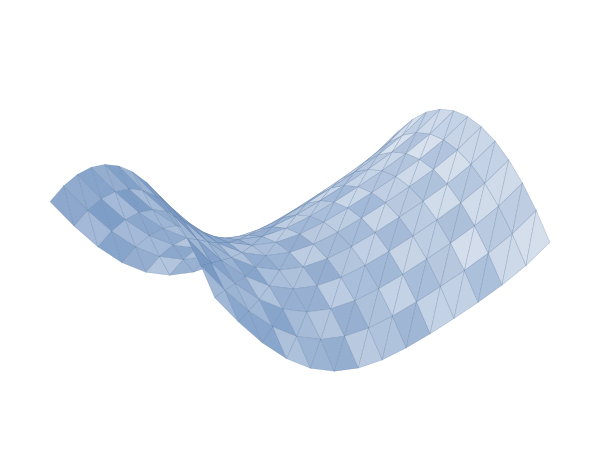
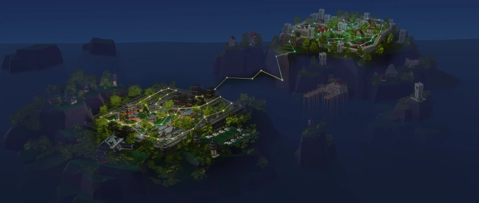
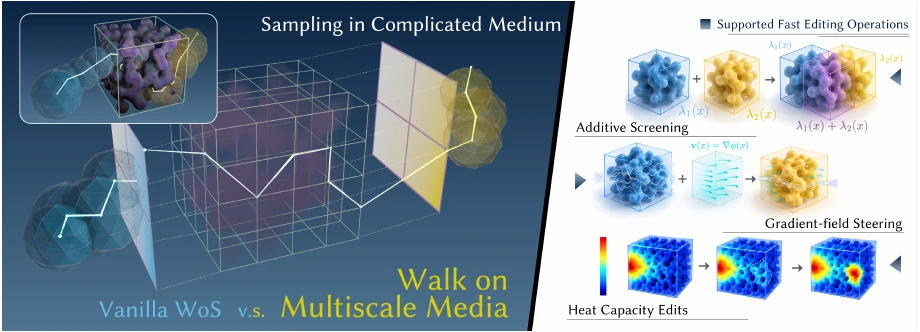
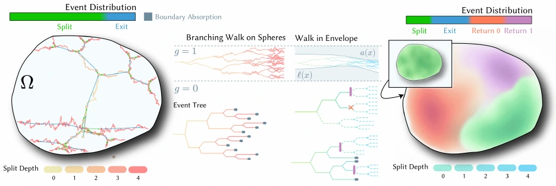
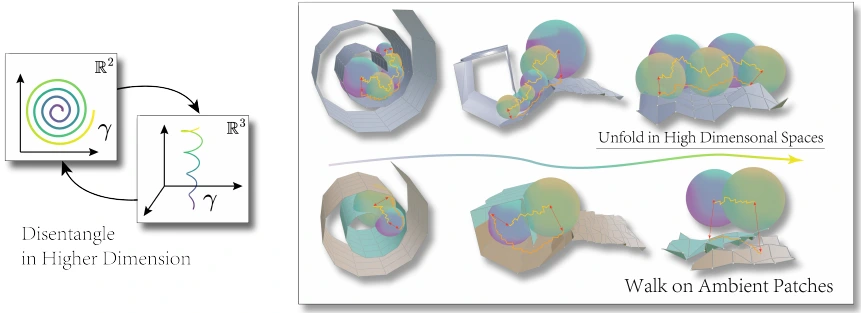
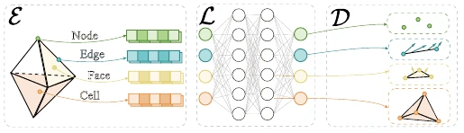
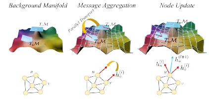

Mathematical Physics
Exploring the geometry and structure of physical laws, from differential geometry to stochastic representations of PDEs.
Differential geometry · PDEsPhD Student · HIT Shenzhen
My research lies at the intersection of mathematical physics, computer graphics, and machine learning. I work on geometry-aware learning and Monte Carlo methods for partial differential equations, advised by Xiucheng Li at Harbin Institute of Technology, Shenzhen.

01 / RESEARCH
Exploring the geometry and structure of physical laws, from differential geometry to stochastic representations of PDEs.
Differential geometry · PDEsBuilding geometry-aware, grid-free solvers for physical simulation and creating interactive computational worlds.
Monte Carlo · Physical simulationDesigning neural methods that encode intrinsic geometry, topology, and the structure of physical problems.
Geometric learning · Neural operators02 / PUBLICATIONS

arXiv preprint · 2026
Reusable transport structures for efficient PDE queries, changing boundary conditions, and interactive geometry edits.
@article{liao2026skeletons,
title = {From Walks to Skeletons: A Reusable Transport Architecture for Interactive Monte Carlo PDE Solvers},
author = {Yunfeng Liao and Yucheng Wu and Xiucheng Li},
year = {2026},
journal = {arXiv preprint · 2026},
url = {https://arxiv.org/abs/2610.36931}
}
arXiv preprint · 2026
Compiling fine-scale heterogeneous transport into editable, composable prefabs for repeated pointwise PDE queries.
@article{liao2026multiscale,
title = {Walk on Multiscale Media: Compiling Editable and Composable Transport Medium Prefabs for Monte Carlo PDE Solvers},
author = {Yunfeng Liao and Xiucheng Li},
year = {2026},
journal = {arXiv preprint · 2026},
url = {https://arxiv.org/abs/2610.35952}
}
arXiv preprint · 2026
Certified solution bounds transform branching diffusion to reduce computational cost while preserving unbiasedness.
@article{liao2026envelopes,
title = {Walk in Envelopes: Efficient Branching Walk-on-Spheres via Certified Solution Bounds},
author = {Yunfeng Liao and Zhenhao Qiu and Xinyang Chen and Xiucheng Li},
year = {2026},
journal = {arXiv preprint · 2026},
url = {https://arxiv.org/abs/2610.25297}
}
arXiv preprint · 2026
Choosing surface embeddings and projection states jointly to improve stochastic PDE solving on folded geometry.

NeurIPS 2025 Spotlight
Higher-order message passing grounded in discrete exterior calculus for boundary-value problems in electromagnetism.
@inproceedings{liao2025dechognn,
title = {Boundary-Value PDEs Meet Higher-Order Differential Topology-aware GNNs},
author = {Yunfeng Liao and Yangxin Wu and Xiucheng Li},
year = {2025},
booktitle = {NeurIPS 2025},
url = {https://openreview.net/forum?id=PluDA8DEar}
}
ICML 2025
Curvature-aware attention and parallel transport bring intrinsic surface geometry into neural PDE solvers.
@inproceedings{liao2025curvgt,
title = {Curvature-aware Graph Attention for PDEs on Manifolds},
author = {Yunfeng Liao and Jiawen Guan and Xiucheng Li},
year = {2025},
booktitle = {ICML 2025},
url = {https://proceedings.mlr.press/v267/liao25b.html}
}* Equal contribution. Preprints are listed separately from peer-reviewed conference papers.
03 / NEWS
A few milestones along the way.
Four new preprints on Monte Carlo PDE solvers: reusable transport skeletons, multiscale media, certified solution envelopes, and solver-adapted embeddings.
PREPRINTSDEC-HOGNN was selected as a Spotlight paper at NeurIPS 2025.
NEURIPSCurvature-aware Graph Attention for PDEs on Manifolds appeared at ICML 2025.
ICMLLET’S CONNECT
For research conversations and potential collaborations.